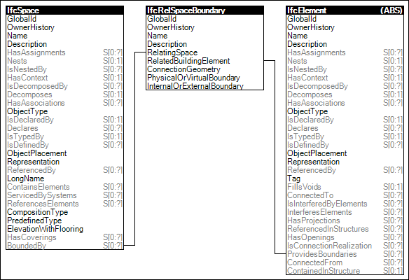

Link to this page
Link to this pageSpaces may have boundaries defined by building elements such as walls, slabs, doors, and windows. Such information may be used to determine heat transmission through surrounding materials.
Figure 80 illustrates an instance diagram.
 |
Figure 80 — Space Boundaries |